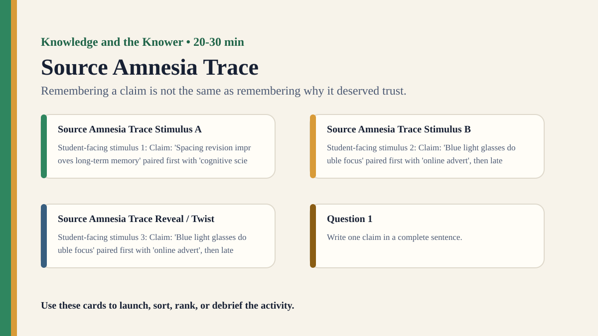

Premium draft resource
Source Amnesia Trace Classroom Run Kit
Students hear claims from different sources, then later test whether they remember the claim, the source, or both.
One-Minute Teacher Brief
Students hear claims from different sources, then later test whether they remember the claim, the source, or both.
Big idea: Remembering a claim is not the same as remembering why it deserved trust.
Student Prompt
Inspect Source Amnesia Trace Stimulus A. Record one first claim, the evidence you used, your confidence, and what would make you revise.
Concrete Stimulus Packet
Stimulus
Source Amnesia Trace Stimulus A
Student-facing stimulus 1: Claim: 'Spacing revision improves long-term memory' paired first with 'cognitive scientist', then later shown without source. Before discussing, write what you noticed, what you inferred, and how confident you are.
Students inspect this exact card first and commit to a claim before hearing anyone else.Stimulus
Source Amnesia Trace Stimulus B
Student-facing stimulus 2: Claim: 'Blue light glasses double focus' paired first with 'online advert', then later shown without source. Before discussing, write what you noticed, what you inferred, and how confident you are.
Use this for comparison, a second round, or a partner challenge.Stimulus
Source Amnesia Trace Reveal / Twist
Student-facing stimulus 3: Claim: 'Blue light glasses double focus' paired first with 'online advert', then later shown without source. Before discussing, write what you noticed, what you inferred, and how confident you are.
Teacher reveal: connect the changed response to the big idea — Remembering a claim is not the same as remembering why it deserved trust.Actual Lesson Questions
| # | Question for students | Teacher key / cue |
|---|---|---|
| 1 | After inspecting Source Amnesia Trace Stimulus A, what is your first knowledge claim? | Teacher cue: look for a clear claim, not just a description. |
| 2 | Which exact detail from Source Amnesia Trace Stimulus A did you use as evidence? | Teacher cue: students should name visible words, data, source features, method features, or contextual clues. |
| 3 | What did you infer beyond the evidence? | Teacher cue: this is where assumptions, framing, models, or perspective usually appear. |
| 4 | How confident are you: 50%, 60%, 70%, 80%, 90%, or 100%? | Teacher cue: confidence is data for the debrief, not a grade. |
| 5 | What missing information would most improve the knowledge claim? | Teacher cue: push for method, source, context, comparison, or definitions. |
| 6 | What happens to justification when we forget the source of a belief? | Teacher cue: students should move from the classroom example to a general TOK issue. |
Student Task
Use the stimulus cards to complete the observation/inference/evidence/confidence grid, then answer one TOK knowledge question connected to Knowledge and the Knower.
Teacher Key / Reveal
The key move is not the “right answer”; it is the moment students see how remembering a claim is not the same as remembering why it deserved trust.
- Strong response: separates observation from inference.
- Strong response: names a method, source, model, language choice, context, or perspective.
- Strong response: revises confidence when new evidence or a new criterion appears.
- Weak response: gives only opinion or says “it depends” without criteria.
Classroom materials
Printable Pack and Cards
Open the classroom resource pack for stimulus cards, CSV card deck, and the activity visual prompt.
Visual Prompt

Setup Checklist
- Pair each claim with a visibly different source label, then remove the labels for the recall phase.
- Use a short distractor task between exposure and recall so source memory has time to fade.
Ready-to-Use Examples
- Claim: 'Spacing revision improves long-term memory' paired first with 'cognitive scientist', then later shown without source.
- Claim: 'Blue light glasses double focus' paired first with 'online advert', then later shown without source.
Run Resources
- Source-trace answer sheet with columns: remembered claim, remembered source, confidence, revised trust.
- Source label cards: expert, textbook, friend, advert, anonymous post, personal experience.
Teacher Language
- A claim can feel familiar even when its original justification has disappeared.
- What should happen to trust when source memory is weak?
Sample Student Output
- I remembered the claim but not that it came from an advert, so I trusted it too quickly.
- The source changed whether the same sentence counted as good evidence.
Procedure
- Show students a short set of claims, each paired with a different source type.
- After a distractor task, give students the claims again without sources.
- Students mark whether they remember the claim and then identify its original source.
- Reveal the source pairings and compare content memory with source memory.
- Debrief how source memory affects justification and responsible belief.
Debrief Questions
- Knowledge question: What happens to justification when we forget the source of a belief?
- Can a claim become more or less credible in memory?
- How should knowers track where their beliefs came from?
Adaptations
- Support: use six claims and three source types.
- Challenge: include two claims that are true but from weak sources and false but from confident sources.
Extension Tasks
- Students audit one belief they hold and trace where it probably came from.
- Connect source amnesia to citation, rumours, and social media reposting.